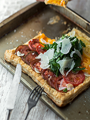

Tarte feuilletée aux tomates, salade de fines herbes & copeaux de parmesan
Ingrédients :
- 4-6 tomates coupées en tranches fines
- 1 abaisse de pâte feuilletée, du commerce
- 2 c. à soupe de moutarde de Dijon
- 2 c. à soupe de mayonnaise
- 1 c. à soupe de thym frais
- Sel et poivre, au goût
- 2 gousses d'ail, émincées
Pour la garniture
- 1/2 tasse de feuilles de persil italien
- 1/4 de tasse de basilic frais, déchiqueté
- 2 c. à soupe d'origan frais
- 2 c. à soupe d'huile d'olive
- 1 c. à soupe de vinaigre de vin rouge
- Sel et poivre, au goût
- 1/2 tasse de copeaux de parmesan frais
Pour la salade
Étapes
- • Préchauffer le four à 375 °F. Tapisser une plaque à cuisson de papier parchemin. Réserver.
- • Étendre les tranches de tomates sur un plan de travail tapissé de papier absorbant afin d'éviter que le jus des tomates tache votre comptoir. Réserver.
- • Abaisser la pâte feuilletée (si ce n'est pas déjà fait), puis déposer sur la plaque à cuisson. Dans un petit bol, mélanger la moutarde, la mayonnaise, le thym, le sel et le poivre, puis badigeonner la pâte de ce mélange.
- • Étendre les tranches de tomates et parsemer l'ail émincé.
- • Saler et poivrer, puis enfourner pendant 20 minutes, ou jusqu'à ce que la pâte soit cuite et croustillante.
- • Dans un bol, mélanger tous les ingrédients « pour la salade », sauf les copeaux de parmesan, puis assaisonner.
- • Servir un morceau de tarte avec la salade et quelques copeaux de parmesan.